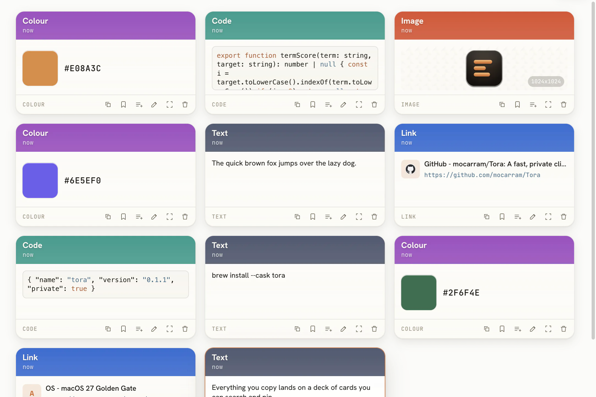
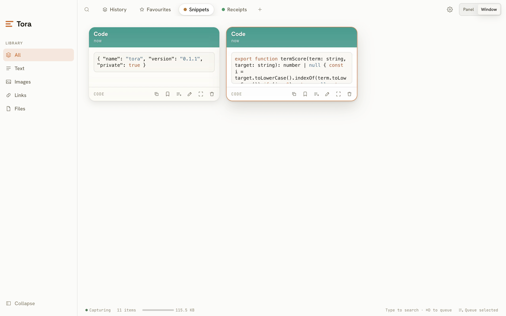
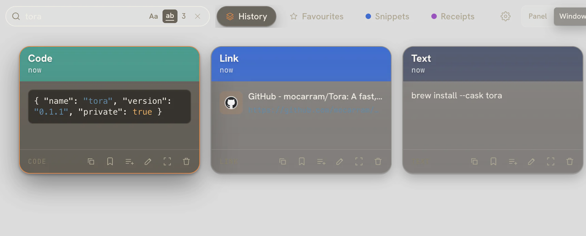
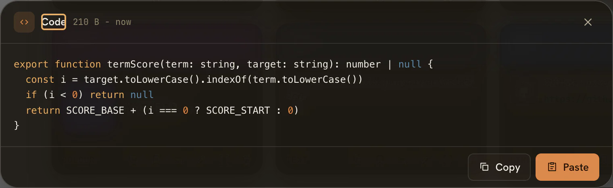
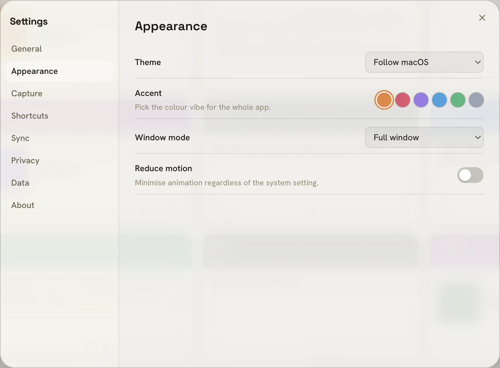

Everything you copy, on a deck
Tora captures text, rich text, images, files, URLs, colours, and code, then shows each as a card with the right preview - syntax-highlighted snippets, colour swatches, image thumbnails, file sizes, and link hosts. Every card remembers the app it came from.

Boards keep it organised
Group clips into named, reorderable boards - drag a card in or save it from the card menu. A clip can live in several boards at once, there's a default Favourites board, and type filters narrow any view in a click.

Search that gets out of the way
Start typing to filter instantly across clips, source apps, and board names - multi-term substring matching, sub-50ms even at 10k+ items. Two VS Code-style toggles refine it: Aa for match case and ab for whole word. It's fully keyboard-navigable.

Preview, then paste straight back
Open any clip in a large preview to read it in full, then Copy or Paste. Tora pastes directly into the app you were just in via Accessibility - keep formatting by default, or hold a modifier for plain text. Queue several clips and paste them in sequence.

Make it yours
Pick an accent vibe - amber, rose, violet, ocean, forest, or graphite - and Tora retints itself top to bottom. Follow macOS appearance or pin light or dark, switch between a quick panel and a full window, and dial motion down if you like.
